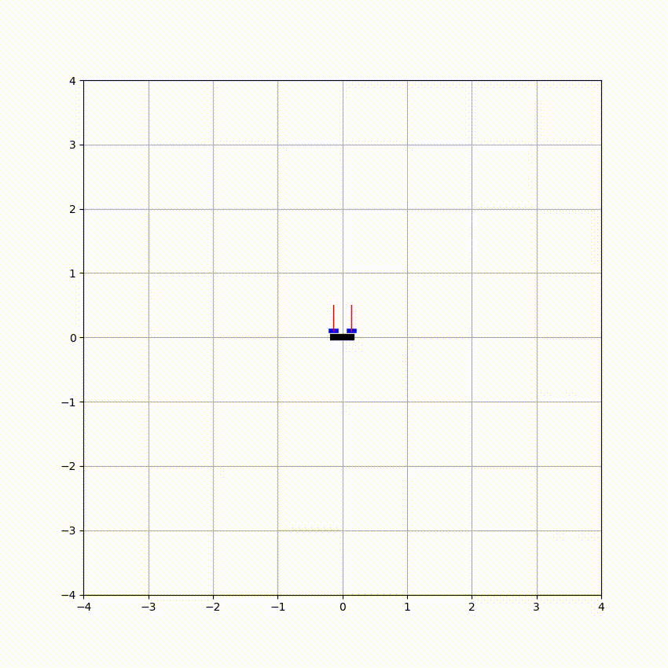

Acrobatic 2D Quadrotor
A Sequential Quadratic Programming (SQP) solver for a 2D quadrotor to perform flipping



Description
- Developed a custom Sequential Quadratic Programming (SQP) solver from scratch to generate optimal control trajectories for aggressive planar quadrotor aerobatics, achieving feasible triple-flip maneuvers
- Formulated the trajectory optimization as a constrained nonlinear programming (NLP) problem; linearized and discretized dynamics to construct QP subproblems, achieving convergence within $\sim$ 16 iterations
- Adapted the solver into a receding-horizon MPC framework using the OSQP backend; demonstrated robust execution of flipping maneuvers under stochastic rotor disturbances
1. Quadrotor System Dynamics

2. Formulation of QP Subproblem
System Dynamics is first linearized using 1st-Order Taylor Expansion at $(x, u) = (\bar{x}, \bar{u}) + (\Delta x, \Delta u)$, and discretized at $(\Delta x, \Delta u)$ to form the QP Subproblem of SQP solver.
Equality Constraints is composed of system dynamics and initial conditions.
Inequality Constraints is composed of limitations on quadrotor thrust and limitations on quadrotor altitude.
2.1 Equality Constraints
2.1.1 Linearize the System
Rearrange the system dynamics
\[\left\{ \begin{aligned} \dot{p_x} &= v_x \\ m \dot{v}_x &= - (u_1 + u_2) \sin \theta \\ \dot{p_y} &= v_y\\ m \dot{v}_y &= (u_1 + u_2) \cos \theta - m g \\ \dot{\theta} &= \omega \\ I \dot{\omega} &= r (u_1 - u_2) \end{aligned} \right. \quad \longrightarrow \quad \dot{x} = f(x, u) \left\{ \begin{aligned} \dot{p_x} &= v_x \\ \dot{v}_x &= - \frac{1}{m} (u_1 + u_2) \sin \theta \\ \dot{p_y} &= v_y\\ \dot{v}_y &= \frac{1}{m} (u_1 + u_2) \cos \theta - g \\ \dot{\theta} &= \omega \\ \dot{\omega} &= r(u_1 - u_2)/I \end{aligned} \right.\]With guess trajectory $\bar{x}$, guess control $\bar{u}$, linearize the system using 1st-Order Taylor Expansion at $(\bar{x}, \bar{u})$
\[\begin{align*} f(x, u) &= f(\bar{x}, \bar{u}) + \frac{\partial}{\partial x}f(\bar{x}, \bar{u})(x - \bar{x}) + \frac{\partial }{\partial u}f(\bar{x}, \bar{u})(u - \bar{u})\\ \end{align*}\]By assigning the following
\[\left\{ \begin{aligned} x &= \bar{x} + \Delta x\\ u &= \bar{u} + \Delta u\\ \end{aligned} \right. \; \longrightarrow \; \left\{ \begin{aligned} \Delta x &= x - \bar{x}\\ \Delta u &= u - \bar{u}\\ \end{aligned} \right. \quad\quad\quad \left\{ \begin{aligned} A &= \frac{\partial}{\partial{x}}f(\bar{x}, \bar{u})\\ B &= \frac{\partial f}{\partial{u}}f(\bar{x}, \bar{u})\\ \end{aligned} \right.\]we obtain a linear system in the form
\[\begin{align*} \dot{x} = f(x, u) &= A(x - \bar{x}) + B(u - \bar{u}) + f(\bar{x}, \bar{u})\\ &= A\Delta x + B\Delta u + f(\bar{x}, \bar{u}) \end{align*}\]Apply the above paradigm to the given nonlinear system, we have
\[\begin{align*} \underbrace{ \begin{bmatrix} \dot{p}_x\\ \dot{v}_x\\ \dot{p}_y\\ \dot{v}_y\\ \dot{\theta}\\ \dot{\omega}\\ \end{bmatrix}}_{\dot{x}} &= \underbrace{ \begin{bmatrix} 0 & 1 & 0 & 0 & 0 & 0\\ 0 & 0 & 0 & 0 & - \frac{1}{m}(\bar{u}_1 + \bar{u}_2)\cos(\bar{\theta}) & 0\\ 0 & 0 & 0 & 1 & 0 & 0\\ 0 & 0 & 0 & 0 & - \frac{1}{m}(\bar{u}_1 + \bar{u}_2)\sin(\bar{\theta}) & 0\\ 0 & 0 & 0 & 0 & 0 & 1\\ 0 & 0 & 0 & 0 & 0 & 0\\ \end{bmatrix}}_{A} \Big( \underbrace{ \begin{bmatrix} p_x\\ v_x\\ p_y\\ v_y\\ \theta\\ \omega\\ \end{bmatrix} - \begin{bmatrix} \bar{p}_x\\ \bar{v}_x\\ \bar{p}_y\\ \bar{v}_y\\ \bar{\theta}\\ \bar{\omega}\\ \end{bmatrix}}_{\Delta x} \Big)\\ &+ \underbrace{ \begin{bmatrix} 0 & 0\\ -\frac{\sin(\bar{\theta})}{m} & -\frac{\sin(\bar{\theta})}{m}\\ 0 & 0\\ \frac{\cos(\bar{\theta})}{m} & \frac{\cos(\bar{\theta})}{m}\\ 0 & 0\\ r/I & -r/I\\ \end{bmatrix}}_{B} \Big( \underbrace{ \begin{bmatrix} u_1\\ u_2 \end{bmatrix} - \begin{bmatrix} \bar{u}_1\\ \bar{u}_2 \end{bmatrix}}_{\Delta u} \Big)\\ &+ \underbrace{ \begin{bmatrix} \bar{v}_x\\ - \frac{1}{m} (\bar{u}_1 + \bar{u}_2) \sin(\bar{\theta})\\ \bar{v}_y\\ \frac{1}{m} (\bar{u}_1 + \bar{u}_2) \cos(\bar{\theta}) - g\\ \bar{\omega}\\ r(\bar{u}_1 - \bar{u}_2)/I \end{bmatrix}}_{f(\bar{x}, \bar{u})} \end{align*}\]2.1.2 Discretize the System
Given system dynamics $\dot{x} = f(x, u)$, we can discretize it using Euler’s Method
\[x_{n+1} = x_n + \Delta t f(x_n, u_n)\]Hence, for the linearized system in the previous section, we have
\[\begin{align*} x_{n+1} &= x_n + \Delta t (A_{n,raw}\Delta x_n + B_{n,raw}\Delta u_n + f(\bar{x}, \bar{u}))\\ (x_{n+1} - \bar{x}_{n+1}) &= (x_n - \bar{x}_n) + \Delta t (A_{n,raw}\Delta x_n + B_{n,raw}\Delta u_n + f(\bar{x}, \bar{u})) + \bar{x}_n - \bar{x}_{n+1}\\ \Delta x_{n+1} &= \Delta x_n + \Delta t A_{n,raw} \Delta x_n + \Delta t B_{n,raw} \Delta u_n + [\bar{x}_n - \bar{x}_{n+1} + \Delta t f(\bar{x}, \bar{u})] \end{align*}\]and in matrix form
\[\begin{align*} \Big( \underbrace{ \begin{bmatrix} p_{x, n+1}\\ v_{x, n+1}\\ p_{y, n+1}\\ v_{y, n+1}\\ \theta_{n+1}\\ \omega_{n+1}\\ \end{bmatrix} - \begin{bmatrix} \bar{p}_{x, n+1}\\ \bar{v}_{x, n+1}\\ \bar{p}_{y, n+1}\\ \bar{v}_{y, n+1}\\ \bar{\theta}_{n+1}\\ \bar{\omega}_{n+1}\\ \end{bmatrix}}_{\Delta x_{n+1}} \Big) =& \Big( \underbrace{ \begin{bmatrix} p_{x, n}\\ v_{x, n}\\ p_{y, n}\\ v_{y, n}\\ \theta_{n}\\ \omega_{n}\\ \end{bmatrix} - \begin{bmatrix} \bar{p}_{x, n}\\ \bar{v}_{x, n}\\ \bar{p}_{y, n}\\ \bar{v}_{y, n}\\ \bar{\theta}_{n}\\ \bar{\omega}_{n}\\ \end{bmatrix}}_{\Delta x_{n}} \Big)\\ &+ \Delta t \underbrace{ \begin{bmatrix} 0 & 1 & 0 & 0 & 0 & 0\\ 0 & 0 & 0 & 0 & - \frac{1}{m}(\bar{u}_{1,n} + \bar{u}_{2,n})\cos(\bar{\theta}_n) & 0\\ 0 & 0 & 0 & 1 & 0 & 0\\ 0 & 0 & 0 & 0 & - \frac{1}{m}(\bar{u}_{1,n} + \bar{u}_{2,n})\sin(\bar{\theta}_n) & 0\\ 0 & 0 & 0 & 0 & 0 & 1\\ 0 & 0 & 0 & 0 & 0 & 0\\ \end{bmatrix}}_{A_{n, raw}} \Big( \underbrace{ \begin{bmatrix} p_{x, n}\\ v_{x, n}\\ p_{y, n}\\ v_{y, n}\\ \theta_{n}\\ \omega_{n}\\ \end{bmatrix} - \begin{bmatrix} \bar{p}_{x, n}\\ \bar{v}_{x, n}\\ \bar{p}_{y, n}\\ \bar{v}_{y, n}\\ \bar{\theta}_{n}\\ \bar{\omega}_{n}\\ \end{bmatrix}}_{\Delta x_{n}} \Big)\\ &+ \Delta t \underbrace{ \begin{bmatrix} 0 & 0\\ -\frac{\sin(\bar{\theta}_n)}{m} & -\frac{\sin(\bar{\theta}_n)}{m}\\ 0 & 0\\ \frac{\cos(\bar{\theta}_n)}{m} & \frac{\cos(\bar{\theta}_n)}{m}\\ 0 & 0\\ r/I & -r/I\\ \end{bmatrix}}_{B_{n, raw}} \Big( \underbrace{ \begin{bmatrix} u_{1,n}\\ u_{2,n} \end{bmatrix} - \begin{bmatrix} \bar{u}_{1,n}\\ \bar{u}_{2,n} \end{bmatrix}}_{\Delta u_n} \Big)\\ &+ \underbrace{ \begin{bmatrix} \bar{p}_{x,n}\\ \bar{v}_{x,n}\\ \bar{p}_{y,n}\\ \bar{v}_{y,n}\\ \bar{\theta}_n\\ \bar{\omega}_n\\ \end{bmatrix}}_{\bar{x}_n} - \underbrace{ \begin{bmatrix} \bar{p}_{x,n+1}\\ \bar{v}_{x,n+1}\\ \bar{p}_{y,n+1}\\ \bar{v}_{y,n+1}\\ \bar{\theta}_{n+1}\\ \bar{\omega}_{n+1}\\ \end{bmatrix}}_{\bar{x}_{n+1}} + \Delta t \underbrace{ \begin{bmatrix} \bar{v}_{x,n}\\ - \frac{1}{m} (\bar{u}_{1,n} + \bar{u}_{2,n}) \sin(\bar{\theta}_n)\\ \bar{v}_{y,n}\\ \frac{1}{m} (\bar{u}_{1,n} + \bar{u}_{2,n}) \cos(\bar{\theta}_n) - g\\ \bar{\omega}_n\\ r(\bar{u}_{1,n} - \bar{u}_{2,n})/I \end{bmatrix}}_{f(\bar{x}, \bar{u})} \end{align*}\] \[\begin{align*} \underbrace{ \begin{bmatrix} \Delta p_{x, n+1}\\ \Delta v_{x, n+1}\\ \Delta p_{y, n+1}\\ \Delta v_{y, n+1}\\ \Delta \theta_{n+1}\\ \Delta \omega_{n+1}\\ \end{bmatrix}}_{\Delta x_{n+1}} =& \underbrace{ \begin{bmatrix} 1 & \Delta t & 0 & 0 & 0 & 0\\ 0 & 1 & 0 & 0 & - \frac{\Delta t}{m}(\bar{u}_{1,n} + \bar{u}_{2,n})\cos(\bar{\theta}_n) & 0\\ 0 & 0 & 1 & \Delta t & 0 & 0\\ 0 & 0 & 0 & 1 & - \frac{\Delta t}{m}(\bar{u}_{1,n} + \bar{u}_{2,n})\sin(\bar{\theta}_n) & 0\\ 0 & 0 & 0 & 0 & 1 & \Delta t\\ 0 & 0 & 0 & 0 & 0 & 1\\ \end{bmatrix}}_{A_n} \underbrace{ \begin{bmatrix} \Delta p_{x, n}\\ \Delta v_{x, n}\\ \Delta p_{y, n}\\ \Delta v_{y, n}\\ \Delta \theta_{n}\\ \Delta \omega_{n}\\ \end{bmatrix}}_{\Delta x_n}\\ &+ \underbrace{ \begin{bmatrix} 0 & 0\\ -\frac{\Delta t}{m}\sin(\bar{\theta}_n) & -\frac{\Delta t}{m}\sin(\bar{\theta}_n)\\ 0 & 0\\ \frac{\Delta t}{m}\cos(\bar{\theta}_n) & \frac{\Delta t}{m}\cos(\bar{\theta}_n)\\ 0 & 0\\ r\Delta t/I & -r\Delta t/I\\ \end{bmatrix}}_{B_n} \underbrace{ \begin{bmatrix} \Delta u_{1,n}\\ \Delta u_{2,n} \end{bmatrix}}_{\Delta u_n}\\ &+ \underbrace{ \begin{bmatrix} \bar{p}_{x,n} - \bar{p}_{x,n+1} + \Delta t\bar{v}_{x,n}\\ \bar{v}_{x,n} - \bar{v}_{x,n+1} - \frac{\Delta t}{m} (\bar{u}_{1,n} + \bar{u}_{2,n}) \sin(\bar{\theta}_n)\\ \bar{p}_{y,n} - \bar{p}_{y,n+1} + \Delta t\bar{v}_{y,n}\\ \bar{v}_{y,n} - \bar{v}_{y,n+1} + \frac{\Delta t}{m} (\bar{u}_{1,n} + \bar{u}_{2,n}) \cos(\bar{\theta}_n) - \Delta tg\\ \bar{\theta}_n - \bar{\theta}_{n+1} + \Delta t\bar{\omega}_n\\ \bar{\omega}_n - \bar{\omega}_{n+1} + r\Delta t(\bar{u}_{1,n} - \bar{u}_{2,n})/I\\ \end{bmatrix}}_{C_n} \end{align*}\]Or simply in the form of the following equation
\[\Delta x_{n+1} = A_n\Delta x_n + B_n\Delta u_n + C_n\]2.1.3 Constraint Formulation
The equality constraints are the initial conditions and the linearized system dynamics
\[\begin{align*} \Delta x_0 &= x_0 - \bar{x}_0\\ \Delta x_{n+1} &= A_n\Delta x_n + B_n\Delta u_n + C_n \end{align*}\]and could be rewritten to the form
\[\underbrace{ \begin{bmatrix} I & & & & & \\ A_0 & B_0 & -I & & & \\ & & A_1 & B_1 & -I & \\ & & & & & \ddots \end{bmatrix}}_{G(\bar{x}, \bar{u})} \underbrace{ \begin{bmatrix} \Delta x_0\\ \Delta u_0\\ \Delta x_1\\ \Delta u_1\\ \vdots \end{bmatrix}}_{\Delta s} = \underbrace{ \begin{bmatrix} x_0 - \bar{x}_{0}\\ -C_0\\ -C_1\\ \vdots \end{bmatrix}}_{g(\bar{x}, \bar{u})}\]where $I\in \mathbb{R}^{6\times 6}$ and
\[\begin{align*} A_n &= \begin{bmatrix} 1 & \Delta t & 0 & 0 & 0 & 0\\ 0 & 1 & 0 & 0 & - \frac{\Delta t}{m}(\bar{u}_{1,n} + \bar{u}_{2,n})\cos(\bar{\theta}_n) & 0\\ 0 & 0 & 1 & \Delta t & 0 & 0\\ 0 & 0 & 0 & 1 & - \frac{\Delta t}{m}(\bar{u}_{1,n} + \bar{u}_{2,n})\sin(\bar{\theta}_n) & 0\\ 0 & 0 & 0 & 0 & 1 & \Delta t\\ 0 & 0 & 0 & 0 & 0 & 1\\ \end{bmatrix} \in \mathbb{R}^{6\times 6} \\ \\ B_n &= \begin{bmatrix} 0 & 0\\ -\frac{\Delta t}{m}\sin(\bar{\theta}_n) & -\frac{\Delta t}{m}\sin(\bar{\theta}_n)\\ 0 & 0\\ \frac{\Delta t}{m}\cos(\bar{\theta}_n) & \frac{\Delta t}{m}\cos(\bar{\theta}_n)\\ 0 & 0\\ r\Delta t/I & -r\Delta t/I\\ \end{bmatrix} \in \mathbb{R}^{6\times 2} \\ \\ C_n &= \begin{bmatrix} \bar{p}_{x,n} - \bar{p}_{x,n+1} + \Delta t\bar{v}_x\\ \bar{v}_{y,n} - \bar{v}_{y,n+1} - \frac{\Delta t}{m} (\bar{u}_1 + \bar{u}_2) \sin(\bar{\theta}_n)\\ \bar{p}_{x,n} - \bar{p}_{x,n+1} + \Delta t\bar{v}_y\\ \bar{v}_{y,n} - \bar{v}_{y,n+1} + \frac{\Delta t}{m} (\bar{u}_1 + \bar{u}_2) \cos(\bar{\theta}_n) - \Delta tg\\ \bar{\theta}_n - \bar{\theta}_{n+1} + \Delta t\bar{\omega}_n\\ \bar{\omega}_n - \bar{\omega}_{n+1} + r\Delta t(\bar{u}_1 - \bar{u}_2)/I\\ \end{bmatrix} \in \mathbb{R}^{6} \end{align*}\]2.2 Inequality Constraints
We need to
- maintain the thrust of each rotor between 0 and 10
- maintain the quadrotor at positive altitude
Therefore,
\[\underbrace{ \begin{bmatrix} 0 & 0 & -1 & 0 & 0 & 0 & 0 & 0\\ 0 & 0 & 0 & 0 & 0 & 0 & 1 & 0\\ 0 & 0 & 0 & 0 & 0 & 0 & -1 & 0\\ 0 & 0 & 0 & 0 & 0 & 0 & 0 & 1\\ 0 & 0 & 0 & 0 & 0 & 0 & 0 & -1 \end{bmatrix}}_{H_n} \underbrace{ \begin{bmatrix} p_{x, n}\\ v_{x, n}\\ p_{y, n}\\ v_{y, n}\\ \theta_{n}\\ \omega_{n}\\ u_{1,n}\\ u_{2,n} \end{bmatrix}}_{s_n} \leq \underbrace{ \begin{bmatrix} -p_{y,min}\\ u_{max}\\ -u_{min}\\ u_{max}\\ -u_{min} \end{bmatrix}}_{h_{raw}}\]By assigning the following
\[s_n = \begin{bmatrix} x_n\\ u_n \end{bmatrix} = \begin{bmatrix} \bar{x}_n + \Delta x_n\\ \bar{u}_n + \Delta u_n \end{bmatrix}\]The constraint could be linearized to
\[H_n \begin{bmatrix} x_n\\ u_n \end{bmatrix} = H_n \begin{bmatrix} \bar{x}_n\\ \bar{u}_n \end{bmatrix} + H_n \begin{bmatrix} \Delta x_n\\ \Delta u_n \end{bmatrix} \leq h_{raw}\]rearrange the terms to the form
\[\begin{align*} H_n \begin{bmatrix} \Delta x_n\\ \Delta u_n \end{bmatrix} &\leq h_{raw} - H_n \begin{bmatrix} \bar{x}_n\\ \bar{u}_n \end{bmatrix} \\ \\ \underbrace{ \begin{bmatrix} 0 & 0 & -1 & 0 & 0 & 0 & 0 & 0\\ 0 & 0 & 0 & 0 & 0 & 0 & 1 & 0\\ 0 & 0 & 0 & 0 & 0 & 0 & -1 & 0\\ 0 & 0 & 0 & 0 & 0 & 0 & 0 & 1\\ 0 & 0 & 0 & 0 & 0 & 0 & 0 & -1 \end{bmatrix}}_{H_n} \underbrace{ \begin{bmatrix} \Delta p_{x, n}\\ \Delta v_{x, n}\\ \Delta p_{y, n}\\ \Delta v_{y, n}\\ \Delta \theta_{n}\\ \Delta \omega_{n}\\ \Delta u_{1,n}\\ \Delta u_{2,n} \end{bmatrix}}_{\Delta s_n} &\leq \underbrace{ \begin{bmatrix} -p_{y,min}\\ u_{max}\\ -u_{min}\\ u_{max}\\ -u_{min} \end{bmatrix}}_{h_{raw}} - \begin{bmatrix} -\bar{p}_{y,n}\\ \bar{u}_{1,n}\\ -\bar{u}_{1,n}\\ \bar{u}_{2,n}\\ -\bar{u}_{2,n} \end{bmatrix} \\ \\ \underbrace{ \begin{bmatrix} 0 & 0 & -1 & 0 & 0 & 0 & 0 & 0\\ 0 & 0 & 0 & 0 & 0 & 0 & 1 & 0\\ 0 & 0 & 0 & 0 & 0 & 0 & -1 & 0\\ 0 & 0 & 0 & 0 & 0 & 0 & 0 & 1\\ 0 & 0 & 0 & 0 & 0 & 0 & 0 & -1 \end{bmatrix}}_{H_n} \underbrace{ \begin{bmatrix} \Delta p_{x, n}\\ \Delta v_{x, n}\\ \Delta p_{y, n}\\ \Delta v_{y, n}\\ \Delta \theta_{n}\\ \Delta \omega_{n}\\ \Delta u_{1,n}\\ \Delta u_{2,n} \end{bmatrix}}_{\Delta s_n} &\leq \underbrace{ \begin{bmatrix} - p_{y,min} + \bar{p}_{y,n}\\ u_{max} - \bar{u}_{1,n}\\ - u_{min} + \bar{u}_{1,n}\\ u_{max} - \bar{u}_{2,n}\\ - u_{min} + \bar{u}_{2,n} \end{bmatrix}}_{h_n} \end{align*}\]The full matrix of inequality constraints are
\[\underbrace{ \begin{bmatrix} H_n & & & & \\ & H_n & & & \\ & & H_n & & \\ & & & \ddots & \\ \end{bmatrix}}_{H} \underbrace{ \begin{bmatrix} \Delta s_0\\ \Delta s_1\\ \Delta s_2\\ \vdots \end{bmatrix}}_{\Delta s} \leq \underbrace{ \begin{bmatrix} h_n\\ h_n\\ h_n\\ \vdots \end{bmatrix}}_{h}\]3. SQP Cost Function
Cost function is formulated as the following with $Q$ as the state weight matrix and $R$ as the control weight
\[\frac{1}{2} \begin{bmatrix} x_0 - x_{0,des}\\ u_0 - u_{0,des}\\ x_1 - x_{1,des}\\ u_1 - u_{1,des}\\ \vdots\\ x_N - x_{N,des} \end{bmatrix}^T \begin{bmatrix} Q & & & & &\\ & R & & & &\\ & & Q & & &\\ & & & R & &\\ & & & & \ddots &\\ & & & & & Q \end{bmatrix} \begin{bmatrix} x_0 - x_{0,des}\\ u_0 - u_{0,des}\\ x_1 - x_{1,des}\\ u_1 - u_{1,des}\\ \vdots\\ x_N - x_{N,des} \end{bmatrix}\]where the desired terminal trajectory $s_{des} = (x_{des}, u_{des})^T$ is
\[s_{des} = \begin{bmatrix} x_{des}\\ u_{des} \end{bmatrix} = \begin{bmatrix} p_{x, des}\\ v_{x, des}\\ p_{y, des}\\ v_{y, des}\\ \theta_{des}\\ \omega_{des}\\ u_{1, des}\\ u_{2, des} \end{bmatrix} = \begin{bmatrix} 0\\ 0\\ 1\\ 0\\ 2\pi\\ 0\\ \frac{1}{2}mg\\ \frac{1}{2}mg \end{bmatrix}\]and we assign
\[s_{n, des} = s_{des} \quad \forall n\]